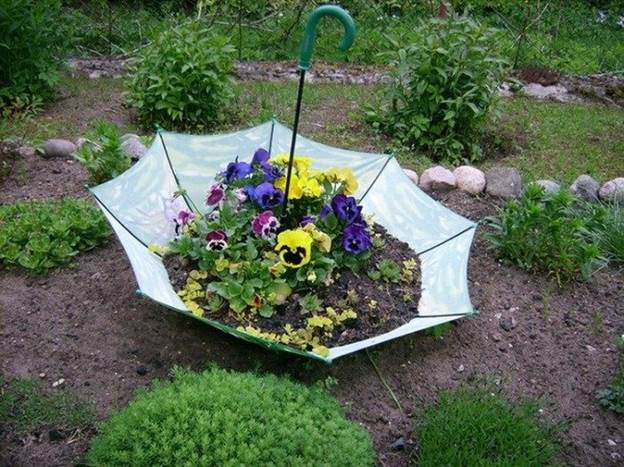
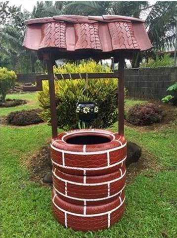
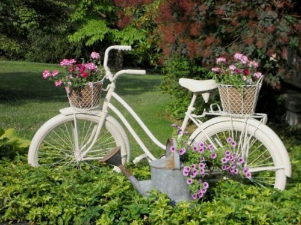

| начало | идеи за балкона | идеи за двора |  |
Идеи за двора
двора е място за почивка и отдих през летните дни, както и прекрасно място! Направете си го уютен!сет със чадър
|  | След поредната буря с дъж, идва и поредния счупен чадър...не го изхвърляйте! Превърнете го в прекрасно място за вашите цветя!
1. първо напълнете чадъра с пръст. 2. след това засадете цветя вътре и вече ще имате прекрасна кашпа от чадър! |
|
мебел от гуми


Кладенец с гуми
| Спукана или протрита гума? Сменете я, но я пазете!
Със стари гуми може да си направите страшна декорация - дори да нямате наистина кладенец, това изглежда много приятно! 1. Пробийте гумите отдолу и отгоре за да се прокарат гредите 2. след това направете покрив. 3. Боядисайте. Вече си имате прекрасен кладенец! Може да запълните гумите с пръст и да си посадите цвете! |
 |
Колело-украса
| Скоро сте разчиствали тавана и намирате старят велосипед от детството ви?
Ръждясал, изкривен - ще го изхвърля, казвате си... Не изхвърляйте стария балкан! Превърнете го в нещо красиво за вашия двор! 1. За начало ако не ви харесва цвета в който е, или най вероятно е в ужасно състояние, го пребоядисайте във цвета който мислите че ще отива на вашата градина - най-често, това е бялото! 2. След това му намерете удачно място, така че да се вписва в градинския екстериор. 3. Украсете го със цветя, накичете го със саксии, сандъчета, развихрете въображението си! |
 |
Пътека от пънчета
 |
отсекли сте поредното дърво? Не го горете, нито изхвърляйте!
Направете го на подова настилна за вашия двор! 1. след като отрежете дървото го нарежете на равни по височина филийки. 2. изберете площа която да направите прекрасна, това може да бъде както по двора така и на градинската тераса! имайте на предвид, че терена ще се повдигне малко! 3. Напаснете малките и големите филийки, така все едно редите пъзел. след това може да лакирате по желание, за да се запази дървото. Ето вече имате прекрасна настилка във вашия двор! |
|
Вашата цветна градина